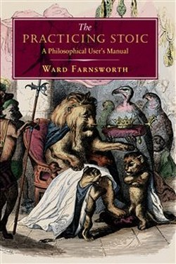

Library › Psychology & People
The Practicing Stoic — Summary & Key Lessons

A field guide to Stoic themes — judgement, desire, emotion, adversity and virtue — with the sources assembled.
📖 OPEN THE FULL INTERACTIVE BREAKDOWN →🌐 Read it in Hindi, Hinglish, Gujarati, Tamil & 22 more languages — free, with audio.
💡 The Big Idea
Farnsworth does something rare: he assembles the actual Stoic texts (Seneca, Epictetus, Marcus) by theme rather than by author, so the reader gets the complete argument on each problem — judgement, desire, emotion, adversity, virtue. The book's insight is that Stoicism is a toolbox for specific failures: it names the exact mental move for anxiety, anger, grief and envy, and gives you the line to say to yourself.
🧠 The 9 Key Lessons
Lesson 1: Judgement: You Are Ruled by Your Labels
Chapter 1: The Mind
The Stoics' first claim: nothing outside you harms you — the harm is in the story you attach. The practice is to watch the automatic label: 'this is terrible' becomes 'this is happening'. Each time you strip a label, you recover the power to respond. Farnsworth shows how the same event feels different under different descriptions.
📖 Example: 'My presentation failed' vs. 'I gave a presentation; some parts could improve' — the event did not change. Read the full example →
⚡ Do this: Catch one label today and restate the fact without the verdict.
Lesson 2: Desire: Want Less, Suffer Less
Chapter 2: Wanting
The Stoics locate suffering in wanting, not in lacking: the person who wants little is hard to disappoint. Farnsworth's practical version: distinguish preference from demand. Prefer wealth, health and success; demand nothing. The preference can be pursued joyfully; the demand becomes a wound when unmet.
📖 Example: The investor who prefers gains but does not demand them sells calmly; the one who demands them panics and sells at the bottom. Read the full example →
⚡ Do this: Write one demand you hold (on a person, an outcome) and rewrite it as a preference.
Lesson 3: Anger: The Short Madness
Chapter 3: Emotion
Seneca called anger 'a brief madness' and catalogued its cost: it damages the judge while punishing the judged, and it is always a choice — every outburst is preceded by a decision to escalate. The Stoic protocol: pause, remember the offence was likely unintended or inevitable, and answer in proportion. The famous line: the best revenge is not to be like your enemy.
📖 Example: The reply to a rude email written in an hour becomes a different reply written the next morning. Read the full example →
⚡ Do this: Install the pause: breathe, delay, and write the professional version.
Lesson 4: Adversity: The Obstacle Is the Way
Chapter 4: Difficulty
The Stoic reframe of hardship: the obstacle is not a block in the path — it is the path. Marcus Aurelius: the impediment to action advances action. What blocks one skill unlocks another: the illness teaches patience, the failure teaches strategy, the rival teaches discipline. The practice is to ask, in every difficulty, what it is asking me to become.
📖 Example: An injury that ended a sport began a new strength routine — the obstacle converted into the way. Read the full example →
⚡ Do this: For your current obstacle, write one sentence: 'This is asking me to develop…' and pursue it.
Lesson 5: Virtue: The Only Real Currency
Chapter 5: Character
The Stoic hierarchy: virtue (wisdom, justice, courage, temperance) is the only true good; external things (wealth, fame, health) are 'preferred indifferents' — nice to have, worthless as a measure of a person. The daily consequence: when you judge your day by character rather than results, no external event can ruin it.
📖 Example: The entrepreneur who measures the day by honesty and effort is unshaken by the bad news cycle. Read the full example →
⚡ Do this: Tonight, score your day on four virtues, not on outcomes: wisest, fairest, bravest, most temperate move.
Lesson 6: Grief and Loss: The Stoic Way of Feeling
Part 5: Adversity
Farnsworth corrects the caricature: Stoics are not emotionless. They grieve fully, love deeply and feel pain — what they refuse is the second layer: the judgment that the loss is an injustice, that the world owes them more. Nature loans what it takes back; the wise grieve the loan and skip the lawsuit against the universe.
📖 Example: Seneca consoling a grieving friend tells him to cry — and to stop telling himself the world has betrayed him; the tears are allowed, the verdict is optional. Read the full example →
⚡ Do this: When loss comes, allow the feeling fully and drop the story that begins 'it shouldn't have happened.'
Lesson 7: Indifference Is Not the Goal — Preference Is
Chapter 2: Desires (The Middle Way)
Farnsworth corrects the most common misreading of Stoicism: the sage does not stop preferring health over sickness, wealth over poverty — he stops being RULED by the preference. You may prefer the good, pursue it, enjoy it; you just refuse to stake your serenity on it. This distinction — preference without dependence — is what makes Stoicism a life philosophy rather than a numbing drug.
📖 Example: A stoic investor prefers profits and works for them, but his sleep does not depend on the market — preference, not addiction. Read the full example →
⚡ Do this: Choose one preference this week — health, money, a person's approval — and practise wanting it without needing it. Track your calm.
Lesson 8: The Art of Not Complaining
Chapter 4: Discomfort (The Discipline of Speech)
Complaining is Stoicism's smallest and most telling failure: every complaint is a vote that the world should be different and that you are owed that difference. The practice is not forced positivity — it is accuracy: name what is without the extra layer of grievance. A complaint-free day is not a cheery day; it is a factual day, and facts are much easier to act on than grievances.
📖 Example: 'The meeting was 20 minutes late. I will use the time well' — versus — 'These people always waste my time' — same fact, different worlds. Read the full example →
⚡ Do this: Try 24 hours without one complaint — out loud or internal. When the urge comes, rephrase as a fact plus an action.
Lesson 9: The View From the Deathbed (Memento Mori, Practically)
Chapter 5: Death (The Practice of Mortality)
Farnsworth treats memento mori not as gloom but as the ultimate prioritisation tool: the person who remembers the ending stops negotiating with the ordinary and starts living what matters. The practice is concrete — visualise the end, and work backwards to what today must contain. The Stoic does not fear death; he uses it, as a mason uses a plumb line.
📖 Example: A writer who knows her years are limited writes the book, not the outline; the person who thinks time is endless refines the outline forever. Read the full example →
⚡ Do this: Tonight: write your epitaph in one sentence. Then ask: does today's to-do list serve that sentence?
✅ 5-Step Action Plan
- Strip one label a day down to its facts.
- Convert one demand into a preference.
- Use the pause on every angry impulse.
- Ask every obstacle: what is it asking me to become?
- Score days on virtue, not on outcomes.
⚠️ When This Doesn't Work
Farnsworth's assembly is faithful but stops at the sources; he does little to argue with the philosophy's harder claims (fate, cosmic purpose). The toolkit is practical; the metaphysics is optional.
💀 The Graveyard Proves It
🏬 Woolworth's (UK) — The High-Street Giant That Outlived Its Reason to Exist. Burn: £385M debt; 807 stores; 27,000 jobs — gone in one day Read the full case study →
💬 Best Quotes from The Practicing Stoic
- “The Stoics say that our suffering comes mostly from our opinions about events, and that we can train ourselves to control those opinions.”
- “What stands in the way becomes the way.”
- “It is the privilege of the gods to want nothing; the privilege of men to want little.”
Interactive version: mark lessons as read, listen in your language, share quote cards.